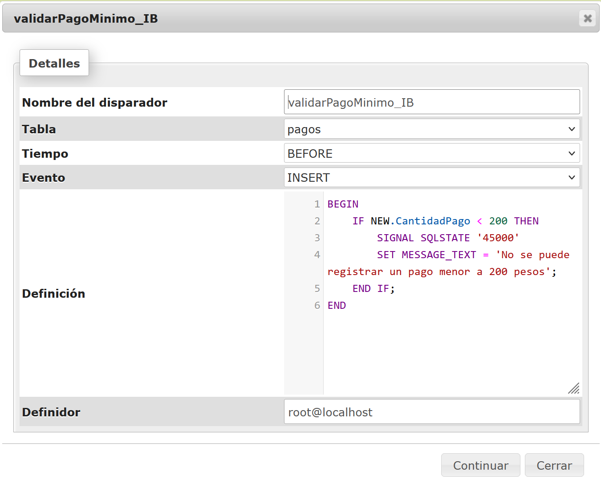
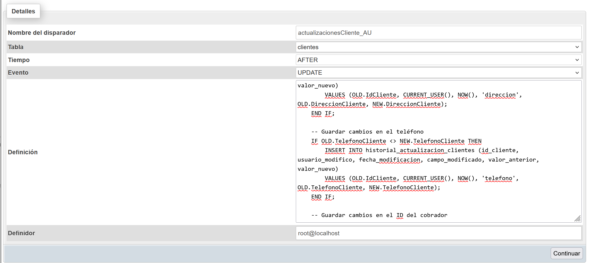
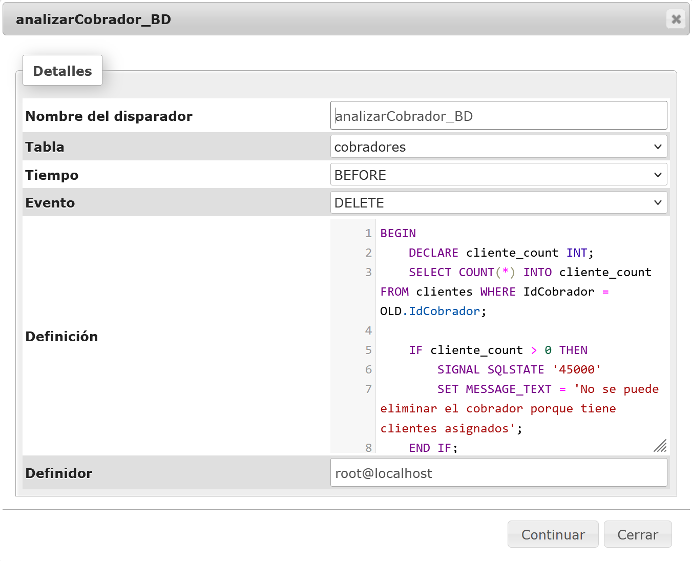

Tema 2.1: Bases de Datos Relacionales
Son sistemas que organizan los datos en tablas relacionadas entre sí, usando claves primarias y foráneas. Utilizan un modelo estructurado que facilita consultas y gestión de datos.
Videos Relacionados
Actividad 2.1
Se realizó un documento/presentación basado en los contenidos de los videos, incorporando ideas y conceptos en forma libre.
Tema 2.2: Normalización
Es el proceso de organizar los datos en una base de datos para reducir la redundancia y mejorar la integridad. Se logra dividiendo las tablas en relaciones más pequeñas y eliminando dependencias innecesarias.
Videos Relacionados
Actividad 2.2
Se realizó un documento/presentación basado en los contenidos de los videos, incorporando ideas y conceptos en forma libre.
Tema 2.3: SQL
Es un lenguaje de consulta estructurado utilizado para gestionar bases de datos. Permite realizar operaciones como SELECT, INSERT, UPDATE y DELETE sobre los datos almacenados.
Videos Relacionados
Actividad 2.3
Se realizaron unos ejercicios de consultas utilizando SELECT, FROM, WHERE, BETWEEN, LIKE, HAVING y JOIN.
Ejercicio de SELECT sin JOIN
Consulta que relaciona dos tablas por medio de clave primaria y clave foránea sin utilizar JOIN. Se usa SELECT, FROM y WHERE.
SELECT co.IdCobrador, co.NombreCobrador, co.ApellidoCobrador, c.IdCliente, c.NombreCliente, c.ApellidoCliente
FROM cobradores co, clientes c
WHERE co.IdCobrador = c.IdCobrador
ORDER BY co.IdCobrador;
Ejercicio de SELECT con BETWEEN
Consulta que obtiene préstamos dentro de un rango de cantidades.
SELECT NoPrestamo, FechaContrato, CantidadPres, IdCliente
FROM prestamos
WHERE CantidadPres BETWEEN 3000 AND 6000;
Ejercicio de INNER JOIN
Consulta utilizando INNER JOIN para unir clientes con cobradores.
SELECT IdCliente, NombreCliente, ApellidoCliente, cobradores.NombreCobrador
FROM clientesnuevos
INNER JOIN cobradores ON clientesnuevos.IdCobrador = cobradores.IdCobrador;
Tema 2.4: Triggers
Son procedimientos que se ejecutan automáticamente en respuesta a ciertos eventos en la base de datos, como la inserción o actualización de datos. Se utilizan para garantizar la integridad y automatizar tareas.
Videos Relacionados
Actividad 2.4
Se realizaron ejercicios de triggers para las operaciones INSERT, DELETE y UPDATE.
Ejercicio de Trigger INSERT
Ejercicio de Trigger UPTADE
Ejercicio de Trigger DELETE
Tema 2.5: Programación Orientada a Objetos
Es un paradigma de programación basado en la idea de objetos, que encapsulan datos y métodos. Los conceptos clave son clases, herencia, polimorfismo y encapsulamiento.
Videos Relacionados
Actividad 2.5
Se realizó un documento/presentación basado en los contenidos de los videos, incorporando ideas y conceptos en forma libre.
Tema 2.6: Práctica de Java y MySQL
En esta práctica se integra Java con bases de datos MySQL, realizando operaciones como la conexión a la base de datos, ejecución de consultas y manejo de resultados.
Videos Relacionados
Actividad 2.6
Se realizó una práctica con los siguientes requisitos mínimos:
- Conexión a MySQL desde Java.
- Implementación de al menos un CRUD completo.
- Uso de la estructura MVC.
- Una consulta SQL que relacione al menos dos tablas mediante clave primaria y clave foránea.
Imágenes de la práctica
Tema 2.7: API
Una Interfaz de Programación de Aplicaciones (API) permite que diferentes aplicaciones se comuniquen entre sí, proporcionando un conjunto de reglas y protocolos para el intercambio de datos y funcionalidades.
Videos Relacionados
Actividad 2.7
Se realizó un documento/presentación basado en los contenidos de los videos, incorporando ideas y conceptos en forma libre.